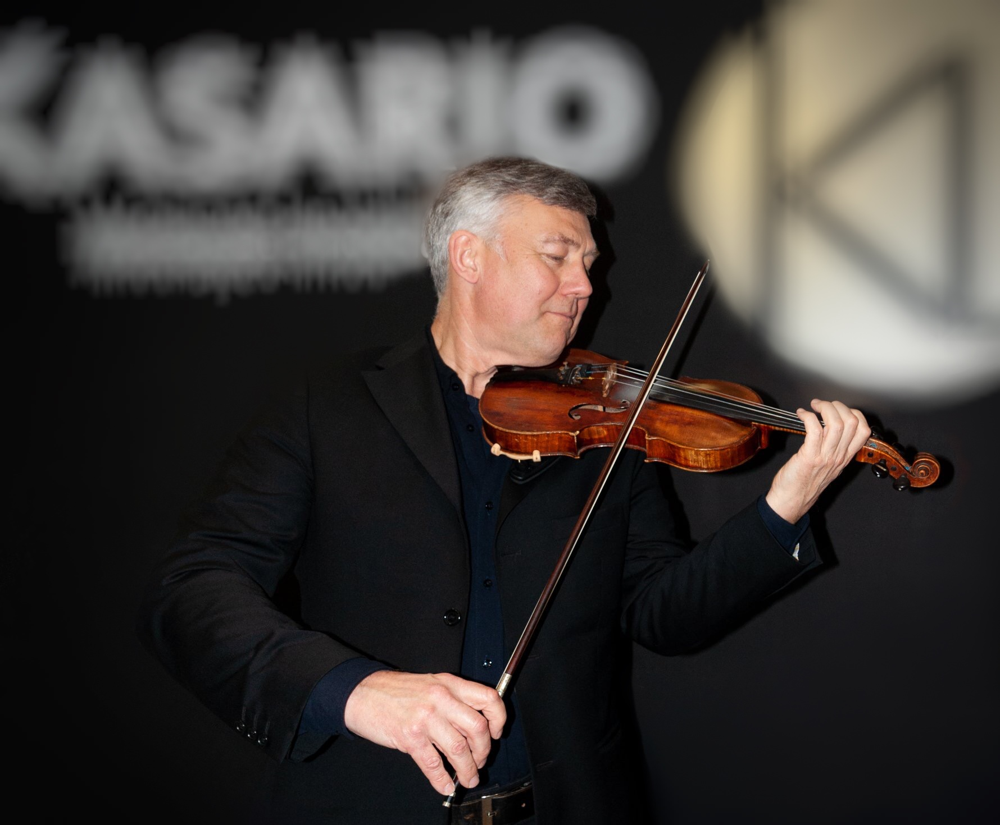

Vladimir Omeltchenko was born in 1964 in Ekaterinburg, Russia. He began musical studies at the age of five. He studied at the Russian School of Violin, always accompanied by Professor Lev Mirchin, student of Lev Zeitlin, Professor of the Tchaikovsky Conservatoire in Moscow, who in turn was a pupil of Professor Leopold Auer - the founder of the Russian School of Violin.
Since 1973 Vladimir has been a regular player in concerts organized by his teacher Lev Mirchin. He played in didactic concerts in schools and also in higher education institutions, and lately collaborated with different artistic and cultural entities, presenting multiple programs at the State University of the Urals in Ekaterinburg, Museums, Institutes, Music Club "Romance", etc.
During the studies he participated in different competitions, winning most of them. He was Concertino of the Chamber Orchestra, also Concertino of the Orchestra of Contemporary Music and of the Symphonic Orchestra of the Urals Superior National Conservatory. After completing the course, he taught for several years at the same Conservatory.
From 1982 to 1997 he worked at the Ural State Philharmonic Symphony Orchestra in the city of Ekaterinburg with leading Russian and foreign conductors participating in prestigious national and international festivals in several countries around the world.
In his hometown of Ekaterinburg, a Capital of the Urals region and the third largest city in Russia, he has developed work to popularize contemporary composers, directing his debut musical works, which were recorded by order of House of Composers of the Urals. Subsequently, the collaboration became a friendship with prominent composers such as A. Barykin, A. Pantykin, D. Suvorov, N. Morozov and others, which gave rise to participation in concerts, conferences, international festivals in Ekaterinburg, Moscow and St. Petersburg and recordings for Radio, TV and CD's as solo, in Violin and Piano Duo, as a leader of the String Quartet and other musical ensembles.
In 1996 he collaborated with the internationally acclaimed composer Giya Kancheli in the writing and arranging of his new music for Violin and Chamber Orchestra, which was composed at the request of Gidon Kremer. In the same year he played the 2nd Brandenburg Concerto in F Major by Johann Sebastian Bach, in a Gala Concert sponsored by the Russian Ministry of Culture, directed by American conductor Sarah Caldwell, recorded for CD (Columbia).
He also collaborated with other national and foreign conductors, composers and performers as Mark Paverman, Andrei Chistiakov, Yuri Nikolaevski, Fedor Gluschenko, Gennady Rozhdestvenski, Andrei Boreiko, and many others. During this period of time he gave performances with the Ural Symphony Orchestra in Check Republic, Germany, France, Belgium, Italy, Greece, South Korea, etc., as well as in many cities of Russia and the former Soviet Union.
He moved to Portugal in 1997, but already in 1996 he recorded a CD in Lisbon.
He was the first Concertino of the Filarmonia das Beiras Orchestra, which he joined in 1997. Since October 2004 he has collaborated with the Chamber Orchestra of Coimbra (currently the "Orquestra Clássica do Centro"). He joined this orchestra as a Leader of Violin II in 2004 and one year later took over the position of Concertmaster. He was the founder and the leader of the String Quartet and the String Quintet of the Orquestra Clássica do Centro and regularly played solo with the orchestra.
In 2000 he founded an cultural musical association "Música Viva - Associação Cultural Musical", which had a main goal of organization of innumerous concerts and events.
He organizes and conducts Masterclasses of Violin at various institutions of music education in Portugal and Russia. He performs in ensembles of Chamber Music, plays in Trio, Quartet and String Quintet and also in Duo of Violin and Piano at various cultural events: concerts, festivals, gala-concerts, embassy presentations, recordings, etc.
In 2017 he participated in the First International Festival of Lev Mirchin in Ekaterinburg, Russia, where he performed in three concerts as a soloist with orchestra and in Violin and Piano Duo: concertos by Vivaldi, Bach and Mozart, Two Romances by Beethoven, Tzigane by Ravel, and other.
In July of 2019 he participated in Vendsyssel Festival, Denmark, as soloist in Concerto by Bach in E Major, BWV 1042, and as concertmaster of chamber orchestra Kammerphilharmonie Europa.
In 2019, In Duo with Patrick de Hooghe, he recorded a CD with sonatas by Mozart, Brahms and Franck, made several concerts in France and in Portugal. The same Duo is currently working on a project dedicated to Beethoven's 250th birthday.